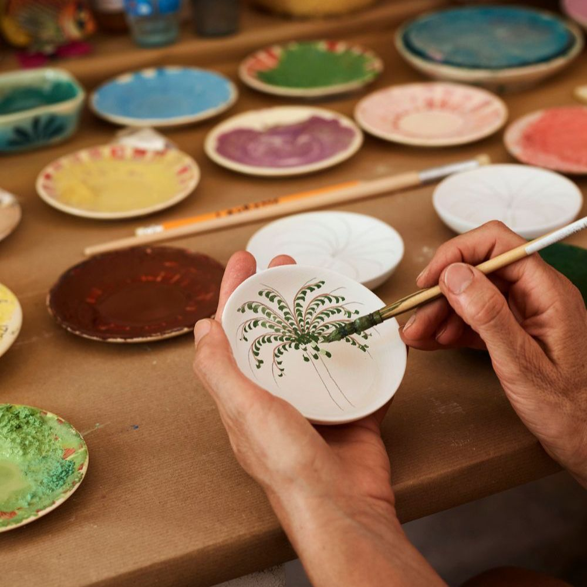
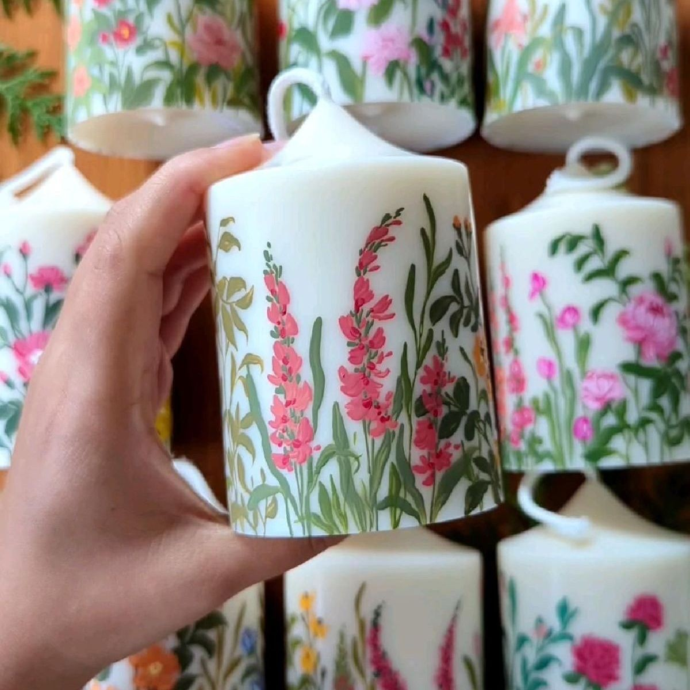

Blog › Programa em SP sozinha
Tempo só seu em São PauloPrograma em SP sozinha: o que fazer com um tempo só seu

Tem dia que a gente só quer um tempo só seu — sem combinar com ninguém, sem feed, sem barulho. E São Paulo, por mais corrida que seja, tem ótimos programas pra isso. A chave é trocar o "passear sozinha" por fazer algo com as mãos: ocupa a cabeça, acalma e ainda rende uma lembrança no fim.
Separamos os programas favoritos pra fazer sozinha em SP — todos com clima acolhedor, instrutor conduzindo e zero necessidade de companhia.
Programas pra desacelerar sozinha

Aula de cerâmica
Botar a mão na argila é quase uma terapia. O programa nº1 pra desacelerar sozinha.
Ver cerâmica →
Pintura
Pintar uma taça ou um quadro, no seu ritmo, com um drink na mão. Leve e prazeroso.
Ver experiência →
Velas aromáticas
Criar uma vela com a sua fragrância. Sensorial, calmo e perfeito pra um momento de pausa.
Ver velas →Perfumaria criativa
Criar um perfume autoral e levar pra casa. Inusitado e gostoso de fazer no seu tempo.
Ver experiência →
Mais ideias de fim de semana
Quer ampliar? Veja o guia completo de programas pra viver SP offline.
Ver guia →
Ver todas
Explore o catálogo completo e escolha o programa que combina com o seu dia.
Explorar tudo →Por que fazer sozinha vale a pena
É um respiro de verdade. Diferente de rolar o celular, uma oficina te tira do piloto automático — você foca em uma coisa só e a cabeça desacelera.
Você não depende de ninguém. Sem precisar alinhar agenda com amigas. Quis ir? Reservou e foi.
Conhece gente nova (se quiser). As turmas são pequenas e o clima é leve — dá pra interagir ou só curtir o seu canto. Veja também o que fazer em SP no final de semana.
Perguntas sobre programa sozinha em SP
O que fazer sozinha em São Paulo?
Experiências criativas são ótimas pra fazer sozinha: aula de cerâmica, pintura, oficina de velas e perfumaria — atividades que ajudam a desacelerar e você sai com algo feito por você.
É estranho fazer uma experiência sozinha?
Não. As oficinas têm clima acolhedor e o instrutor conduz tudo. Muita gente faz sozinha justamente pra ter um tempo só seu.
Quanto custa uma experiência pra fazer sozinha em SP?
As experiências começam em cerca de R$150 por pessoa, com materiais inclusos. O valor varia conforme a atividade e a duração.
Bora reservar um tempo só seu?
Conta o que te faz bem que a Elarah sugere o programa perfeito pra você curtir sozinha em SP.